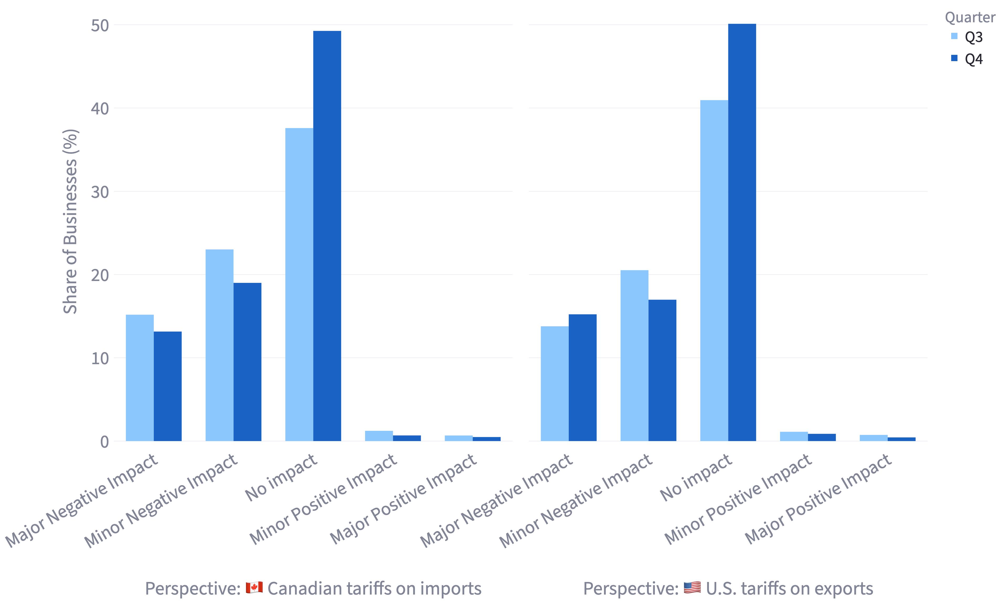
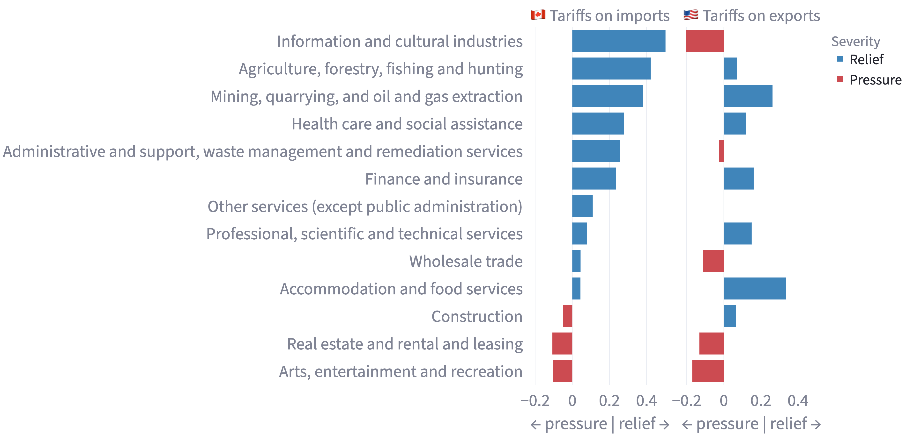

Introduction
In 2025, trade tensions and tariff uncertainty was felt across North America. While tariffs are often discussed in terms of trade volumes and prices, I focus on how businesses perceive their impact, and how those perceptions evolve over time.
This project explores quarterly business survey data from Statistics Canada and examines how Canadian businesses report the impact of tariffs across industries.
Distribution of reported impacts

This chart reflects how tariff impacts are distributed for both Canadian tariffs on imports and U.S. tariffs on exports. I look at Q3 and Q4 specifically because many business responses in Q2 were collected shortly after the tariffs were first announced or just coming into effect. This means that businesses were still forming expectations and many were unsure how tariffs would affect them.
Some patterns from the data:
- Major negative impacts slightly decreased for Canadian tariffs on imports, while increasing slightly from Q3 to Q4 for U.S. tariffs on exports
- Minor negative impacts had a small decrease for both Canadian tariffs on imports and U.S. tariffs on exports
- Majority of businesses reported no impact, which increased for most businesses from Q3 to Q4
This indicates that tariff stress did in fact stabilize for most firms, however, some businesses experienced growing pressure.
Industry-level changes

This chart shows how tariff severity has changed from quarter to quarter, highlighting rising pressure and easing pressure in tariff severity from Q3 to Q4.
- Information and cultural industries: decreased pressure on imports but increased on exports
- Arts, entertainment, and recreation: slightly affected on imports and rising pressure on exports
- Agriculture, forestry, fishing, and hunting: declining pressure on both imports and exports
This chart shows that tariff impacts are uneven and depend on trade orientation. In the industry examples I chose above, we can conclude that industries like information and cultural sectors, diverge depending on trade orientation, meaning it sees relief in one area (imports) but growing pressure in another (exports). Other industries such as arts and recreation, show that services can also be indirectly affected. Finally, agriculture and related industries see a decline in severity in both directions, which means that there is relative stability overall.
Conclusion
This analysis should be interpreted as an indicator of perceived pressure rather than direct economic losses. Business sentiment is important because it shapes pricing, investment and supply-chain decisions before those effects actually take charge.